Last updated: 2026-11-18
Live track record: 1171 closed picks, 34% win rate. Average predicted probability 42% vs actual 46% (26 decided). 116 still open. Full track record →
| Ticker | Sector | Dir | Price | RSI(7) | % vs 20D | Volume | Entry | Stop | Target | R:R | Avg Hold | Probability | Hist. win rate | Sample | Earnings |
|---|---|---|---|---|---|---|---|---|---|---|---|---|---|---|---|
| NVDA | Information Technology | LONG | $150.96 | 14.9 | -20.1% | 1.3x | $150.96 | $143.41 | $189.04 | 5.05:1 | 7.8 | 34% | 64% | 14 | 98d |
| FCX | Materials | LONG | $51.45 | 19.8 | -16.1% | 1.76x 🔥 | $51.45 | $48.88 | $61.36 | 3.85:1 | 7.4 | 20% | 50% | 14 | 64d |
| UNH | Health Care | LONG | $349.9 | 17.6 | -13.2% | 2.74x 🔥 | $349.9 | $332.4 | $403.16 | 3.04:1 | 10.5 | 27% | 50% | 12 | 55d |
| MU | Information Technology | LONG | $705.27 | 34.6 | -12.8% | 0.83x | $705.27 | $670.01 | $809.1 | 2.94:1 | 9.0 | 43% | 58% | 12 | 35d |
| MRNA | Health Care | LONG | $196.79 | 28.3 | -12.8% | 0.51x | $196.79 | $186.95 | $225.68 | 2.94:1 | 8.8 | 56% | 56% | 9 | 86d |
| P | Information Technology | LONG | $101.0 | 35.1 | -11.7% | 1.7x 🔥 | $101.0 | $95.95 | $114.33 | 2.64:1 | 7.6 | 43% | 50% | 10 | unknown |
| CHTR | Communication Services | SHORT | $139.19 | 73.7 | 14.7% | 0.62x | $139.19 | $146.15 | $121.31 | 2.57:1 | 7.0 | 71% | 71% | 14 | 72d |
| ILMN | Health Care | LONG | $210.01 | 40.6 | -10.5% | 0.69x | $210.01 | $199.51 | $234.62 | 2.34:1 | 5.4 | 43% | 50% | 10 | 78d |
| DVN | Energy | LONG | $41.99 | 29.3 | -10.4% | 1.04x | $41.99 | $39.89 | $46.84 | 2.31:1 | 8.0 | 74% | 82% | 11 | 90d |
| MPC | Energy | LONG | $373.86 | 28.5 | -10.2% | 0.91x | $373.86 | $355.17 | $416.15 | 2.26:1 | 10.4 | 73% | 80% | 10 | 76d |
| EXPE | Consumer Discretionary | LONG | $245.79 | 33.1 | -10.0% | 0.64x | $245.79 | $233.5 | $272.97 | 2.21:1 | 8.5 | 45% | 53% | 15 | 85d |
| VEEV | Health Care | LONG | $277.24 | 13.3 | -9.7% | 1.75x 🔥 | $277.24 | $263.38 | $306.93 | 2.14:1 | 7.7 | 55% | 55% | 11 | 15d |
| OXY | Energy | LONG | $53.76 | 22.7 | -9.6% | 0.96x | $53.76 | $51.07 | $59.46 | 2.12:1 | 9.6 | 44% | 67% | 15 | 91d |
| CMG | Consumer Discretionary | SHORT | $36.93 | 72.8 | 11.5% | 0.59x | $36.93 | $38.78 | $33.13 | 2.06:1 | 10.0 | 59% | 67% | 18 | 83d |
| HUM | Health Care | LONG | $385.55 | 27.9 | -9.2% | 2.16x 🔥 | $385.55 | $366.27 | $424.82 | 2.04:1 | 6.4 | 53% | 53% | 15 | 84d |
| VLO | Energy | LONG | $343.73 | 30.8 | -9.2% | 0.88x | $343.73 | $326.54 | $378.38 | 2.02:1 | 10.4 | 76% | 83% | 6 | 71d |
LONG = oversold, expected to bounce back up toward the 20-day average. SHORT = overbought, expected to pull back down toward the 20-day average. Stop-loss = 5% against the position. Probability = this ticker's historical win rate minus penalties when the chart structure is broken (hover for reasons). 🔥 means volume was 1.5x+ the 20-day average. Tickers with earnings due within 3 days are excluded. Macro events pulled live from a public economic calendar feed (high-impact USD events only). Mechanical screen only — check news before acting. Not financial advice.
Probability 64% → 34%: broke below 60d swing low (-15); below 200-day avg, downtrend (-8); lower highs and lower lows (-7)
Earlier signals on NVDA: 2026-11-17: ⏳ still open 2026-11-12: ❌ hit stop -5.0% 2026-11-10: ❌ hit stop -10.0%
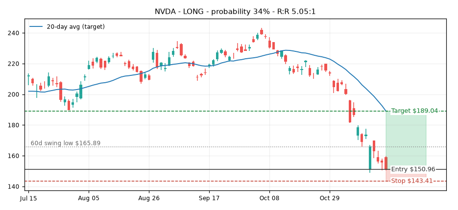
Probability 50% → 20%: broke below 60d swing low (-15); below 200-day avg, downtrend (-8); lower highs and lower lows (-7)
Earlier signals on FCX: 2026-11-16: ❌ hit stop -5.5% 2026-11-05: ❌ hit stop -5.0% 2026-11-03: ❌ hit stop -5.0%
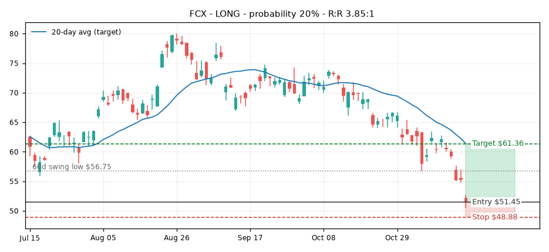
Probability 50% → 27%: broke below 60d swing low (-15); below 200-day avg, downtrend (-8)
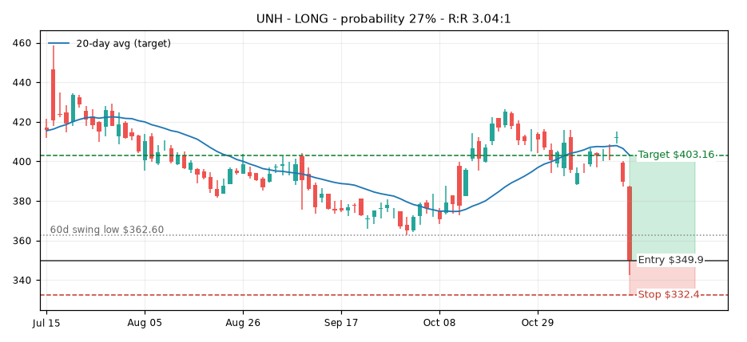
Probability 58% → 43%: below 200-day avg, downtrend (-8); lower highs and lower lows (-7)
Earlier signals on MU: 2026-11-05: ⏳ still open 2026-11-04: ❌ hit stop -5.6% 2026-11-02: ❌ hit stop -5.0%
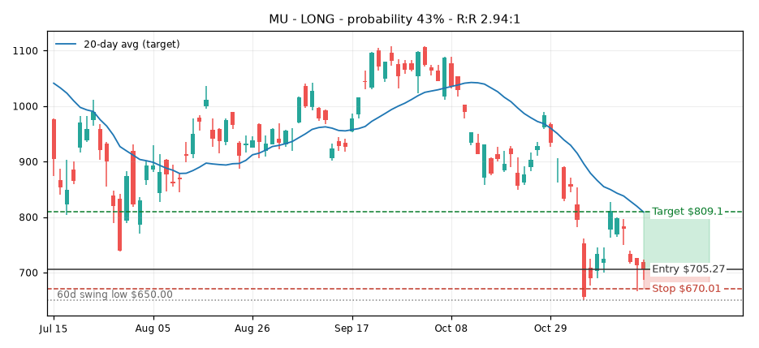
Probability 56%: no structure warnings.
Earlier signals on MRNA: 2026-11-17: ⏳ still open 2026-10-22: ✅ hit target +13.7% 2026-09-08: ❌ hit stop -5.0%
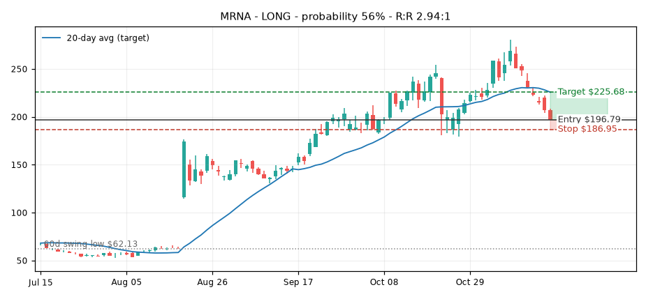
Probability 50% → 43%: lower highs and lower lows (-7)
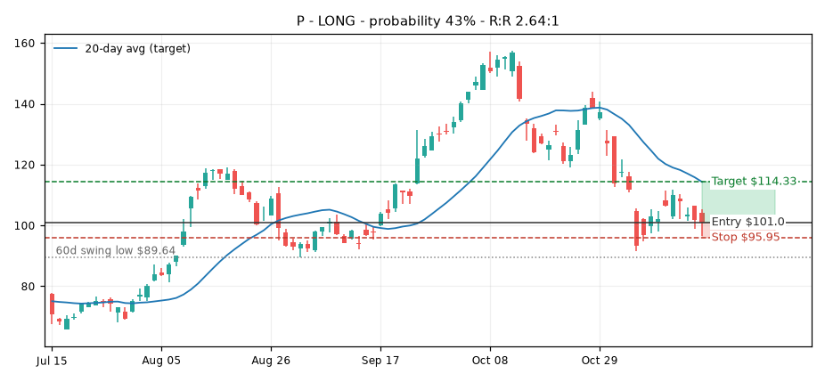
Probability 71%: no structure warnings.
Earlier signals on CHTR: 2026-11-17: ⏳ still open 2026-11-10: ❌ hit stop -5.0% 2026-10-12: ✅ hit target +13.1%
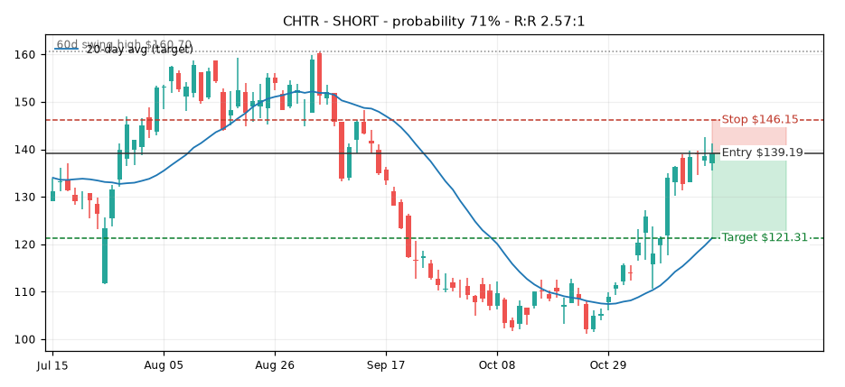
Probability 50% → 43%: lower highs and lower lows (-7)
Earlier signals on ILMN: 2026-11-16: ⏳ still open 2026-11-12: ❌ hit stop -5.0% 2026-11-05: ❌ hit stop -5.0%
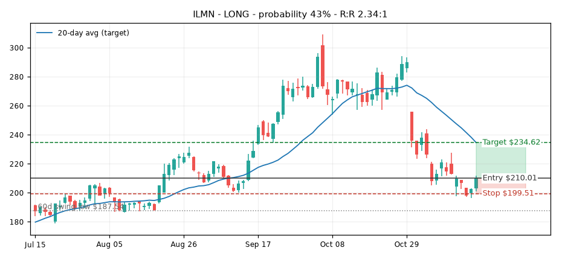
Probability 82% → 74%: below 200-day avg, downtrend (-8)
Earlier signals on DVN: 2026-11-06: ⏳ still open 2026-08-24: ❌ hit stop -5.0% 2026-08-24: ❌ hit stop -5.4%
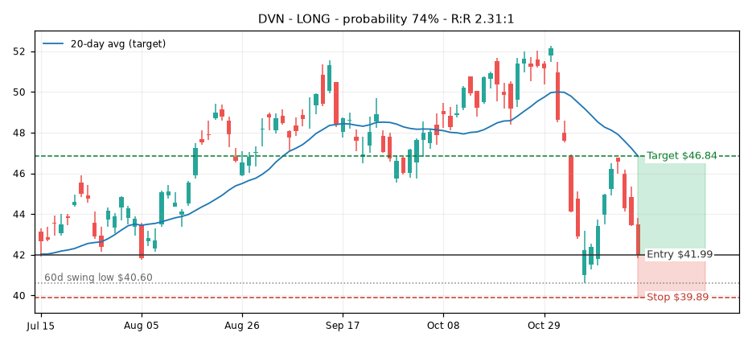
Probability 80% → 73%: lower highs and lower lows (-7)
Earlier signals on MPC: 2026-11-04: ⏳ still open 2026-08-25: ❌ hit stop -5.5% 2026-08-24: ❌ hit stop -5.6%
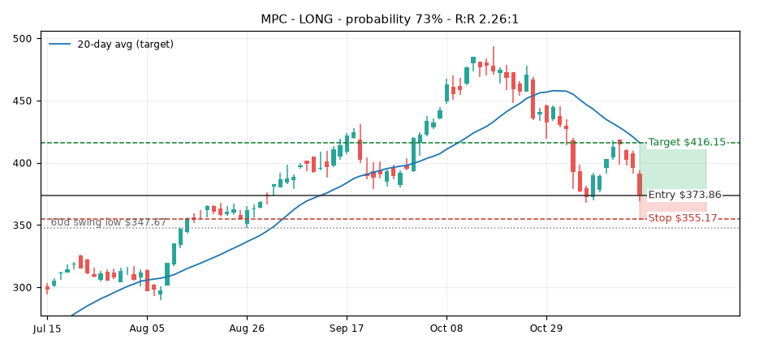
Probability 53% → 45%: below 200-day avg, downtrend (-8)
Earlier signals on EXPE: 2026-11-10: ❌ hit stop -5.2% 2026-09-24: ✅ hit target +13.3% 2026-09-23: ✅ hit target +13.4%
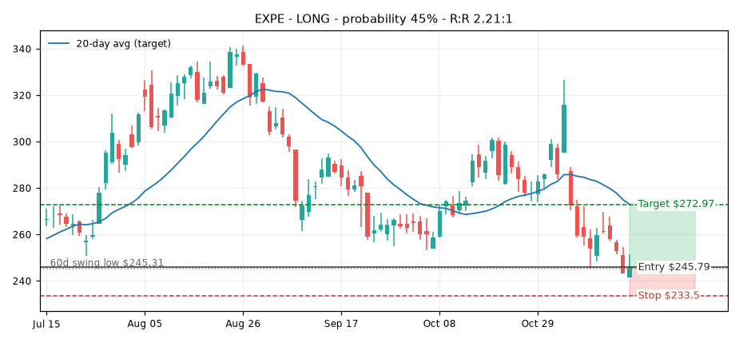
Probability 55%: no structure warnings.
Earlier signals on VEEV: 2026-09-03: ⌛ expired +3.9% 2026-09-02: ⌛ expired -0.4% 2026-09-01: ⌛ expired -2.2%
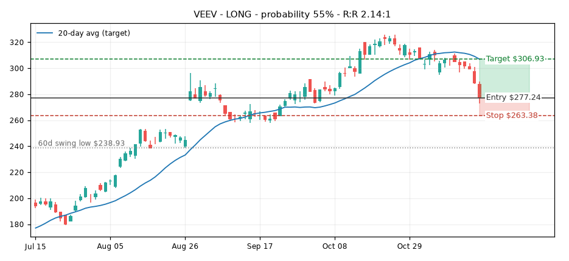
Probability 67% → 44%: broke below 60d swing low (-15); below 200-day avg, downtrend (-8)
Earlier signals on OXY: 2026-08-24: ✅ hit target +6.3%
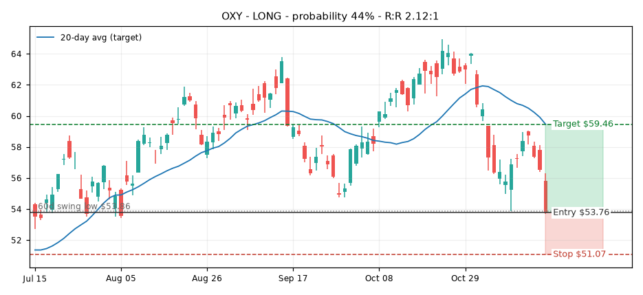
Probability 67% → 59%: above 200-day avg, uptrend (-8)
Earlier signals on CMG: 2026-11-04: ❌ hit stop -5.0% 2026-08-25: ✅ hit target +7.2% 2026-08-24: ❌ hit stop -5.0%
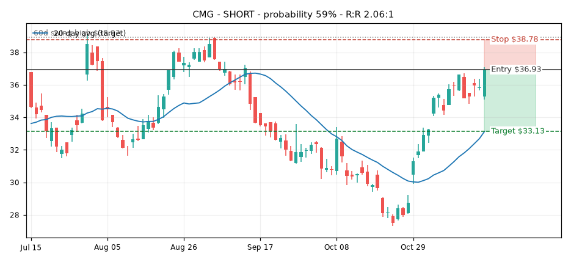
Probability 53%: no structure warnings.
Earlier signals on HUM: 2026-10-09: ⌛ expired +2.1%
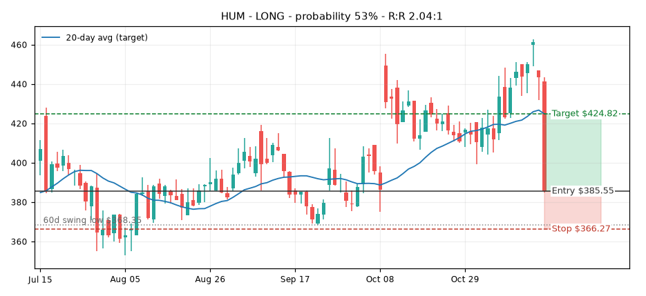
Probability 83% → 76%: lower highs and lower lows (-7)
Earlier signals on VLO: 2026-11-06: ⏳ still open 2026-11-04: ❌ hit stop -5.0% 2026-11-02: ❌ hit stop -5.0%
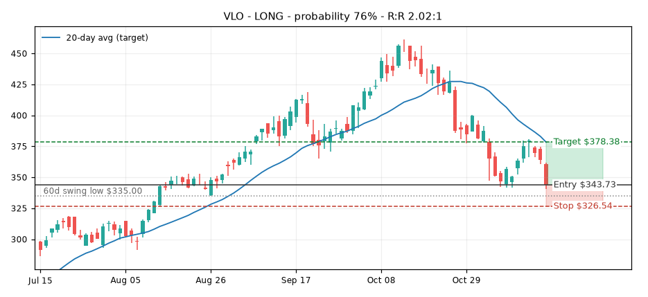